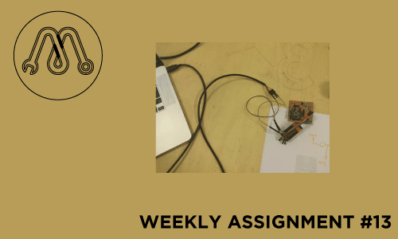
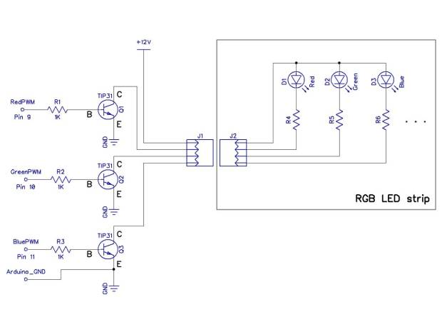

WEEK 13

NETWORKING COMMUNICATION
To complete this assignment I designed this networking system:
As MASTER a control board with an input (the photoresistor shield I realized for the INPUT ASSIGNMENT)
communicates with a SLAVE by wireless (a RGBdriver) and with a pc by serial using a USB-FTDI cable.
To build the wireless connection I used two
PANSTAMP AVR radio transceiver
so I designed and realized two board supporting them.
The first one is a control board, in which you can insert several input board as the photoresistor shield I realized for the INPUT ASSIGNMENT.
The second one is a RGBdriver board, to control a RGB led strip.
The program I realized let the led strips blink using the photoresistor value as delay time, and writes on the serial monitor of my mac this value, as I show in this
video
BOARDS DESIGN AND REALIZATION
I designed those boards using eagle and I realized them using fabmodules on roland srm-20 mill.
To design the control board I focused about what I need on this board:
2 row 12 pins to insert the PANSTAMP
3 row 7 pins to insert input shields using the same FABKIT scheme (5 input pins + gnd + vcc)
1 row 5 pins to FTDI Serial Programming
alimentation system to take power from a 9v battery and convert to 3.3v (PANSTAMP voltage)
To realize the power regulation, I used a LM1117 and two polar capacitor using the FIXED OUTPUT REGOLATOR scheme in the
DATASHEET
The chance to power the board with a 9v battery allows to control the RGBstrip by wireless, walking in the room.
I add a switch to turn on and off the board without removing the battery.
CBholes.png
CBtraces.png
CB.brd
CB.sch
To design the RGBdriver board I focused about:
2 row 12 pins to insert the PANSTAMP
1 row 5 pins to FTDI Serial Programming
all others pins broken out just in the easier way (no really needed)
alimentation system to take power from a 12v transformer and power the LEDstrip directly and the PANSTAMP converting to 3.3v
3 pwm digital pins out each to a transistor to convert pwm line in electric power input to control the 3 components RGB
a 4 I/O screw a the end to join the led strips - Red Green Blue Line12v
The power regulation is the same of the earlier board, without switch.
I used the transistor TIP 31following this scheme 
The digital pins I used were 3, 5, 6.
CBholes.png
CBtraces.png
CB.brd
CB.sch
SERIAL COMMUNICATION
I used an
USB-FTDI cable
to connect my Mac to the Panstamp Serial programming 5 pins that I broke out.
To let them comunicate, just connect GROUND and each RX to the respective TX. Because the board is self-powered you don’t need to connect vcc.
Now, just adding to the program, written using arduino ide, the
Serial.begin
to set the baudrate (normally 9600) and the
Serial.println
command to receive the info we want (in this case the photoresistor value) and visualize them to the serial monitor.
WIRELESS COMMUNICATION
TRANSMITTING
In the same
transmitter .ino file
I programmed the wireless communication using the
PANSTAMP libraries.
At beginning of the sketch we need to define this 5 parameters.
#define RFCHANNEL 0
#define SYNCWORD1 0xB5
#define SYNCWORD0 0x47
#define SOURCE_ADDR 5
#define DESTINATION_ADDR 4
The first three can not be changed, the last two instead are very important, they define the address of communication.
PANSTAMP has 12 channels eligible (0-11), if we want that 2 transceiver comunicate each to the other, they need to have same source and destination address parameters.
It means that we can also use more PANSTAMP series in the same room and let them totally ignore, just giving to each series different address.
In the void setup insert this 4 lines:
panstamp.radio.setChannel(RFCHANNEL);
panstamp.radio.setSyncWord(SYNCWORD1, SYNCWORD0);
panstamp.radio.setDevAddress(SOURCE_ADDR);
panstamp.radio.setCCregs();
Then in the void loop prepare the packet to be sent, using the function “txPacket”.
With "txPacket.length = N;" you decide how many data compose your packet. In this case 2, the destination address and the sensor value.
With “txPacket.data[n] = name;" you insert in each data of your packet the value (from 0 to 255) you want send.
The first one has to be always the destination address you define at beginning of the sketch. Remember that the list starts from [0].
At the end we can send the packet we created using this command "panstamp.radio.sendData(txPacket);”
RECEIVING
As we see in the
receiver .ino file
in initialization and setup we need to add the same code we wrote for the transmitting file.
But before the usual void setup, we need to add the void rfPacketReceived(CCPACKET *packet) in which we open the received packet.
As in the transmitting code, in the receiving code we can use a similar “packet” function using the symbol -> instead the dot.
I add an “if” on the packet length just in case we received a broken packet with less data than we want.
Then just compile “$[n] = int (packet -> data[n]);” to split the data received in the variable you create.
- Maker:
Leonardo Zaccone
- Date:
02/03/2015
- FabLab:
Frosinone, Italy
{kind=link}
{kind=link}
{kind=link}
{kind=link}